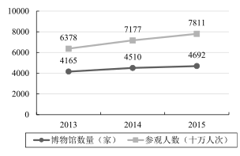

第 1 题 #
1.A. boastingB. denyingC. warningD. ensuring
考研英语 · questions · 2017
题号和章节目录由结构化数据生成。选项按卷面字母顺序显示；原标记保留在 JSON 中。
2017 年全国硕士研究生招生考试英语（二）
Read the following text. Choose the best word(s) for each numbered blank and mark A, B, C or D on the ANSWER SHEET. (10 points)
People have speculated for centuries about a future without work. Today is no different, with academics, writers, and activists once again 1 that technology is replacing human workers. Some imagine that the coming work-free world will be defined by 2 : A few wealthy people will own all the capital, and the masses will struggle in an impoverished wasteland.
A different and not mutually exclusive 3 holds that the future will be a wasteland of a different sort, one 4 by purposelessness: Without jobs to give their lives 5 , people will simply become lazy and depressed. 6 , today’s unemployed don’t seem to be having a great time. One Gallup poll found that 20 percent of Americans who have been unemployed for at least a year report having depression, double the rate for 7 Americans. Also, some research suggests that the 8 for rising rates of mortality, mental-health problems, and addiction 9 poorly-educated, middle-aged people is a shortage of well-paid jobs. Perhaps this is why many 10 the agonizing dullness of a jobless future.
But it doesn’t 11 follow from findings like these that a world without work would be filled with unease. Such visions are based on the 12 of being unemployed in a society built on the concept of employment. In the 13 of work, a society designed with other ends in mind could 14 strikingly different circumstances for the future of labor and leisure. Today, the 15 of work may be a bit overblown. “Many jobs are boring, degrading, unhealthy, and a waste of human potential,” says John Danaher, a lecturer at the National University of Ireland in Galway.
These days, because leisure time is relatively 16 for most workers, people use their free time to counterbalance the intellectual and emotional 17 of their jobs. “When I come home from a hard day’s work, I often feel 18 ,” Danaher says, adding, “In a world in which I don’t have to work, I might feel rather different” — perhaps different enough to throw himself 19 a hobby or a passion project with the intensity usually reserved for 20 matters.
Read the following four texts. Answer the questions after each text by choosing A, B, C or D. Mark your answers on the ANSWER SHEET. (40 points)
Every Saturday morning, at 9 am, more than 50,000 runners set off to run 5km around their local park. The Parkrun phenomenon began with a dozen friends and has inspired 400 events in the UK and more abroad. Events are free, staffed by thousands of volunteers. Runners range from four years old to grandparents; their times range from Andrew Baddeley’s world record 13 minutes 48 seconds up to an hour.
Parkrun is succeeding where London’s Olympic “legacy” is failing. Ten years ago on Monday, it was announced that the Games of the 30th Olympiad would be in London. Planning documents pledged that the great legacy of the Games would be to lever a nation of sport lovers away from their couches. The population would be fitter, healthier and produce more winners. It has not happened. The number of adults doing weekly sport did rise, by nearly 2 million in the run-up to 2012 — but the general population was growing faster. Worse, the numbers are now falling at an accelerating rate. The opposition claims primary school pupils doing at least two hours of sport a week have nearly halved. Obesity has risen among adults and children. Official retrospections continue as to why London 2012 failed to “inspire a generation.” The success of Parkrun offers answers.
Parkrun is not a race but a time trial: Your only competitor is the clock. The ethos welcomes anybody. There is as much joy over a puffed-out first-timer being clapped over the line as there is about top talent shining. The Olympic bidders, by contrast, wanted to get more people doing sport and to produce more elite athletes. The dual aim was mixed up: The stress on success over taking part was intimidating for newcomers.
Indeed, there is something a little absurd in the state getting involved in the planning of such a fundamentally “grassroots” concept as community sports associations. If there is a role for government, it should really be getting involved in providing common goods — making sure there is space for playing fields and the money to pave tennis and netball courts, and encouraging the provision of all these activities in schools. But successive governments have presided over selling green spaces, squeezing money from local authorities and declining attention on sport in education. Instead of wordy, worthy strategies, future governments need to do more to provide the conditions for sport to thrive. Or at least not make them worse.
21. According to Paragraph 1, Parkrun has ____
22. The author believes that London’s Olympic “legacy” has failed to____
23. Parkrun is different from Olympic games in that it ____
24. With regard to mass sports, the author holds that governments should ____
25. The author’s attitude to what UK governments have done for sports is ____
With so much focus on children’s use of screens, it’s easy for parents to forget about their own screen use. “Tech is designed to really suck you in,” says Jenny Radesky in her study of digital play, “and digital products are there to promote maximal engagement. It makes it hard to disengage, and leads to a lot of bleed-over into the family routine.”
Radesky has studied the use of mobile phones and tablets at mealtimes by giving mother-child pairs a food-testing exercise. She found that mothers who used devices during the exercise started 20 percent fewer verbal and 39 percent fewer nonverbal interactions with their children. During a separate observation, she saw that phones became a source of tension in the family. Parents would be looking at their emails while the children would be making excited bids for their attention.
Infants are wired to look at parents’ faces to try to understand their world, and if those faces are blank and unresponsive — as they often are when absorbed in a device — it can be extremely disconcerting for the children. Radesky cites the “still face experiment” devised by developmental psychologist Ed Tronick in the 1970s. In it, a mother is asked to interact with her child in a normal way before putting on a blank expression and not giving them any visual social feedback: the child becomes increasingly distressed as she tries to capture her mother’s attention. “Parents don’t have to be exquisitely present at all times, but there needs to be a balance and parents need to be responsive and sensitive to a child’s verbal or nonverbal expressions of an emotional need,” says Radesky.
On the other hand, Tronick himself is concerned that the worries about kids’ use of screens are born out of an “oppressive ideology that demands that parents should always be interacting” with their children: “It’s based on a somewhat fantasised, very white, very upper-middle-class ideology that says if you’re failing to expose your child to 30,000 words you are neglecting them.” Tronick believes that just because a child isn’t learning from the screen doesn’t mean there’s no value to it — particularly if it gives parents time to have a shower, do housework or simply have a break from their child. Parents, he says, can get a lot out of using their devices to speak to a friend or get some work out of the way. This can make them feel happier, which lets them be more available to their child the rest of the time.
26. According to Jenny Radesky, digital products are designed to ____
27. Radesky’s food-testing exercise shows that mothers’ use of devices ____
28. Radesky cites the “still face experiment” to show that ____
29. The oppressive ideology mentioned by Tronick requires parents to ____
30. According to Tronick, kids’ use of screens may ____
Today, widespread social pressure to immediately go to college in conjunction with increasingly high expectations in a fast-moving world often causes students to completely overlook the possibility of taking a gap year. After all, if everyone you know is going to college in the fall, it seems silly to stay back a year, doesn’t it? And after going to school for 12 years, it doesn’t feel natural to spend a year doing something that isn’t academic.
But while this may be true, it’s not a good enough reason to condemn gap years. There’s always a constant fear of falling behind everyone else on the socially perpetuated “race to the finish line,” whether that be toward graduate school, medical school or lucrative career. But despite common misconceptions, a gap year does not hinder the success of academic pursuits — in fact, it probably enhances it.
Studies from the United States and Australia show that students who take a gap year are generally better prepared for and perform better in college than those who do not. Rather than pulling students back, a gap year pushes them ahead by preparing them for independence, new responsibilities and environmental changes — all things that first-year students often struggle with the most. Gap year experiences can lessen the blow when it comes to adjusting to college and being thrown into a brand new environment, making it easier to focus on academics and activities rather than acclimation blunders.
If you’re not convinced of the inherent value in taking a year off to explore interests, then consider its financial impact on future academic choices. According to the National Center for Education Statistics, nearly 80 percent of college students end up changing their majors at least once. This isn’t surprising, considering the basic mandatory high school curriculum leaves students with a poor understanding of the vast academic possibilities that await them in college. Many students find themselves listing one major on their college applications, but switching to another after taking college classes. It’s not necessarily a bad thing, but depending on the school, it can be costly to make up credits after switching too late in the game. At Boston College, for example, you would have to complete an extra year were you to switch to the nursing school from another department. Taking a gap year to figure things out initially can help prevent stress and save money later on.
31. One of the reasons for high-school graduates not taking a gap year is that ____
32. Studies from the US and Australia imply that taking a gap year helps ____
33. The word “acclimation” (Para.3) is closest in meaning to ____
34. A gap year may save money for students by helping them ____
35. The most suitable title for this text would be ____
Though often viewed as a problem for western states, the growing frequency of wildfires is a national concern because of its impact on federal tax dollars, says Professor Max Moritz, a specialist in fire ecology and management.
In 2015, the US Forest Service for the first time spent more than half of its $5.5 billion annual budget fighting fires — nearly double the percentage it spent on such efforts 20 years ago. In effect, fewer federal funds today are going towards the agency’s other work — such as forest conservation, watershed and cultural resources management, and infrastructure upkeep — that affect the lives of all Americans.
Another nationwide concern is whether public funds from other agencies are going into construction in fire-prone districts. As Moritz puts it, how often are federal dollars building homes that are likely to be lost to a wildfire?
“It’s already a huge problem from a public expenditure perspective for the whole country,” he says. “We need to take a magnifying glass to that. Like, ‘Wait a minute, is this OK?’ Do we want instead to redirect those funds to concentrate on lower-hazard parts of the landscape?”
Such a view would require a corresponding shift in the way US society today views fire, researchers say.
For one thing, conversations about wildfires need to be more inclusive. Over the past decade, the focus has been on climate change — how the warming of the Earth from greenhouse gases is leading to conditions that worsen fires.
While climate is a key element, Moritz says, it shouldn’t come at the expense of the rest of the equation.
“The human systems and the landscapes we live on are linked, and the interactions go both ways,” he says. Failing to recognize that, he notes, leads to “an overly simplified view of what the solutions might be. Our perception of the problem and of what the solution is becomes very limited.”
At the same time, people continue to treat fire as an event that needs to be wholly controlled and unleashed only out of necessity, says Professor Balch at the University of Colorado. But acknowledging fire’s inevitable presence in human life is an attitude crucial to developing the laws, policies, and practices that make it as safe as possible, she says.
“We’ve disconnected ourselves from living with fire,” Balch says. “It is really important to understand and try and tease out what is the human connection with fire today.”
36. More frequent wildfires have become a national concern because in 2015 they ____
37. Moritz calls for the use of “a magnifying glass” to ____
38. While admitting that climate is a key element, Moritz notes that ____
39. The overly simplified view Moritz mentions is a result of failing to ___
40. Professor Balch points out that fire is something man should ____
Read the following text and match each of the number items in the left column to its corresponding information in the right column. There are two extra choices in the right column. Mark your answers on the ANSWER SHEET. (10 points)
The decline in American manufacturing is a common refrain, particularly from Donald Trump. “We don’t make anything anymore,” he told Fox News, while defending his own made-in-Mexico clothing line.
Without question, manufacturing has taken a significant hit during recent decades, and further trade deals raise questions about whether new shocks could hit manufacturing.
But there is also a different way to look at the data.
Across the country, factory owners are now grappling with a new challenge: Instead of having too many workers, they may end up with too few. Despite trade competition and outsourcing, American manufacturing still needs to replace tens of thousands of retiring boomers every year. Millennials may not be that interested in taking their place. Other industries are recruiting them with similar or better pay.
For factory owners, it all adds up to stiff competition for workers — and upward pressure on wages. “They’re harder to find and they have job offers,” says Jay Dunwell, president of Wolverine Coil Spring, a family-owned firm. “They may be coming [into the workforce], but they’ve been plucked by other industries that are also doing as well as manufacturing.” Mr. Dunwell has begun bringing high school juniors to the factory so they can get exposed to its culture.
At RoMan Manufacturing, a maker of electrical transformers and welding equipment that his father cofounded in 1980, Robert Roth keeps a close eye on the age of his nearly 200 workers. Five are retiring this year. Mr. Roth has three community-college students enrolled in a work-placement program, with a starting wage of $13 an hour that rises to $17 after two years.
At a worktable inside the transformer plant, young Jason Stenquist looks flustered by the copper coils he’s trying to assemble and the arrival of two visitors. It’s his first week on the job. Asked about his choice of career, he says at high school he considered medical school before switching to electrical engineering. “I love working with tools. I love creating,” he says.
But to win over these young workers, manufacturers have to clear another major hurdle: parents, who lived through the worst US economic downturn since the Great Depression, telling them to avoid the factory. Millennials “remember their father and mother both were laid off. They blame it on the manufacturing recession,” says Birgit Klohs, chief executive of The Right Place, a business development agency for western Michigan.
These concerns aren’t misplaced: Employment in manufacturing has fallen from 17 million in 1970 to 12 million in 2015. When the recovery began, worker shortages first appeared in the high-skilled trades. Now shortages are appearing at the mid-skill levels.
“The gap is between the jobs that take no skills and those that require a lot of skill,” says Rob Spohr, a business professor at Montcalm Community College. “There’re enough people to fill the jobs at McDonalds and other places where you don’t need to have much skill. It’s that gap in between, and that’s where the problem is.”
Julie Parks of Grand Rapids Community College points to another key to luring Millennials into manufacturing: a work/life balance. While their parents were content to work long hours, young people value flexibility. “Overtime is not attractive to this generation. They really want to live their lives,” she says.
41. Jay Dunwell
选项见上方原卷表格。
42. Jason Stenquist
选项见上方原卷表格。
43. Birgit Klohs
选项见上方原卷表格。
44. Rob Spohr
选项见上方原卷表格。
45. Julie Parks
选项见上方原卷表格。
46. Directions:
Translate the following text into Chinese. Write your translation on the ANSWER SHEET. (15 points)
My dream has always been to work somewhere in an area between fashion and publishing. Two years before graduating from secondary school, I took a sewing and design course thinking that I would move on to a fashion design course. However, during that course I realised I was not good enough in this area to compete with other creative personalities in the future, so I decided that it was not the right path for me. Before applying for university I told everyone that I would study journalism, because writing was, and still is, one of my favorite activities. But, to be honest, I said it, because I thought that fashion and me together was just a dream — I knew that no one could imagine me in the fashion industry at all! So I decided to look for some fashion-related courses that included writing. This is when I noticed the course “Fashion Media & Promotion.”
此题暂无可用答案。
47. Directions:
Suppose you are invited by Professor Williams to give a presentation about Chinese culture to a group of international students. Write a reply to
1) accept the invitation, and
2) introduce the key points of your presentation.
You should write about 100 words on the ANSWER SHEET.
Do not use your own name. Use “Li Ming” instead.
Do not write your address. (10 points)
此题暂无可用答案。
48. Directions:
Write an essay based on the chart below. In your writing, you should
1) interpret the chart, and
2) give your comments.
You should write about 150 words on the ANSWER SHEET. (15 points)

此题暂无可用答案。